01
白海豚台风深入内陆致灾扩大 应急管理部调拨中央救灾物资
今年第13号台风白海豚8月12日继续深入中国内陆，强降雨带从华东延伸至华中地区，多地出现历史同期罕见的暴雨过程。应急管理部紧急调拨中央救灾物资，支持安徽、河南、湖北等省做好转移安置工作。截至当日18时，台风已造成超过300万人受灾，1.2万间房屋不同程度损坏，直接经济损失超过80亿元。气象部门预计未来48小时台风残涡还将持续影响黄淮地区，国家防总维持防汛防台风二级应急响应。
社会
今年第13号台风白海豚8月12日继续深入中国内陆，强降雨带从华东延伸至华中地区，多地出现历史同期罕见的暴雨过程。应急管理部紧急调拨中央救灾物资，支持安徽、河南、湖北等省做好转移安置工作。截至当日18时，台风已造成超过300万人受灾，1.2万间房屋不同程度损坏，直接经济损失超过80亿元。气象部门预计未来48小时台风残涡还将持续影响黄淮地区，国家防总维持防汛防台风二级应急响应。
苹果公司正式向媒体发出邀请函，确认2026秋季新品发布会将于9月9日在加州库比蒂诺Apple Park举行。届时iPhone 18 Pro系列、Apple Watch Series 12、AirPods Pro 3等多款新品将集中亮相。iPhone 18 Pro最大亮点是首次搭载M5芯片，AI推理性能较上代提升60%。此外，全新的ProMotion 2.0屏幕支持1Hz-240Hz智能动态刷新率，配合5000mAh硅碳负极电池，续航时间有望突破36小时，再次引领行业标杆。
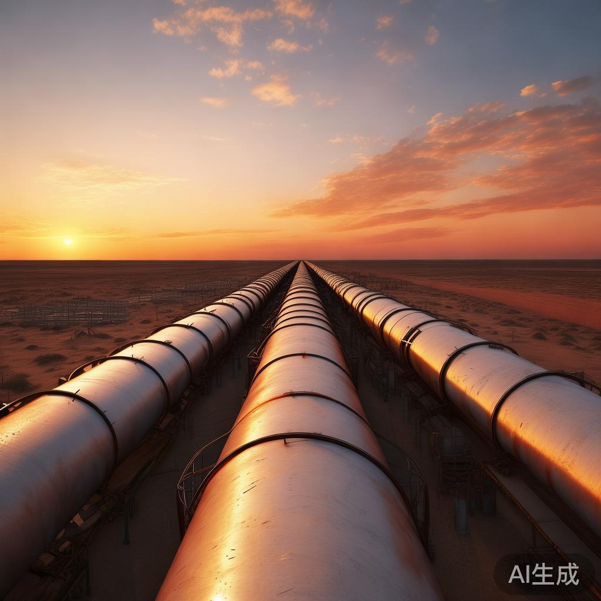
在伊朗持续封锁霍尔木兹海峡背景下，沙特阿拉伯8月12日正式启动东西输油管线扩容计划，全线运力从每日500万桶提升至900万桶，可绕过海峡直接向红海港口输送原油。沙特能源大臣表示，扩容工程耗资57亿美元，将在未来三个月内分阶段投运。国际油价短线波动，布伦特原油回落至每桶78美元附近。分析人士认为，沙特的绕行方案将削弱伊朗的谈判筹码，但地区紧张局势短期内难以根本缓和。
俄乌两军8月12日在顿涅茨克方向爆发高强度战斗，乌军在波克罗夫斯克郊区发起反击，试图收复上月失守的若干阵地。俄方则动用滑翔制导炸弹和远程火箭炮对乌军集结地进行火力压制。战场胶着之际，北约峰会即将在华盛顿召开，多国就援乌武器清单和入约问题进行密集磋商。乌总统泽连斯基视频参会，呼吁尽快提供远程打击能力和更多防空系统。国际观察人士担忧，峰会前后俄军可能加大攻势以争取谈判筹码。
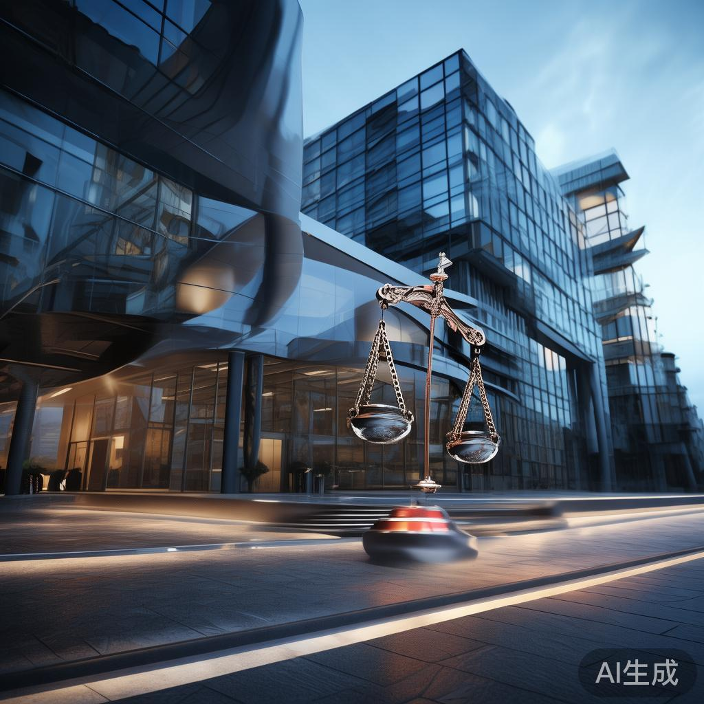
美国得克萨斯州一个陪审团8月11日裁定Meta在用户面部识别数据收集中违反州隐私法，需支付超过1.4万亿美元赔偿金，几乎相当于公司全部市值。这一天文数字赔偿立刻引发全球科技界与法律界震动。Meta声明将提起上诉，称判决金额明显超出合理范围。分析认为，此案可能成为全球数据隐私诉讼的判例标杆，迫使硅谷巨头全面重审其数据合规架构。欧盟、日本、巴西等司法管辖区已表示将密切关注案件后续进展。
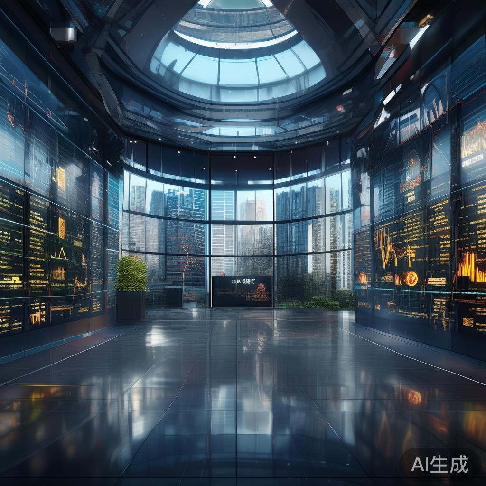
中国人民银行8月12日公布的金融数据显示，7月末广义货币M2同比增长8.6%，比上月末高0.5个百分点，体现出货币政策逆周期调节效果显现。当月人民币贷款增加7700亿元，其中企事业中长期贷款占比超过60%，制造业、绿色发展、科技创新等领域成为信贷投放重点。央行有关部门负责人表示，下一阶段将继续实施适度宽松的货币政策，加大对实体经济特别是小微企业、科技创新企业的支持力度。
全球最大开源AI模型平台Hugging Face近日发布的2026年春季报告显示，中国研发的开源大模型下载量已占全球总量的41%，历史性超越美国跃居世界第一。DeepSeek、Qwen、文心一言等模型表现尤为抢眼，其中DeepSeek V4在多项国际基准测试中排名前三。报告指出，中国AI开源生态的爆发得益于完善的算法人才储备、强大的算力基础设施以及活跃的开发者社区。这一里程碑标志着全球AI竞争格局正在发生深刻变化。
2026年中非合作论坛峰会成果清单8月12日正式公布，涉及基础设施、数字经济和绿色能源三大重点领域。其中基建项目46个、总投资超过480亿美元，涵盖公路、铁路、港口、机场等多种类型；数字经济合作包括5G网络建设、数据中心、智慧城市等27个项目；绿色能源领域则重点推进光伏、风电、储能等清洁能源项目落地。多家非洲国家元首对成果清单给予高度评价，认为中非合作正在为全球南方现代化注入强劲动力。
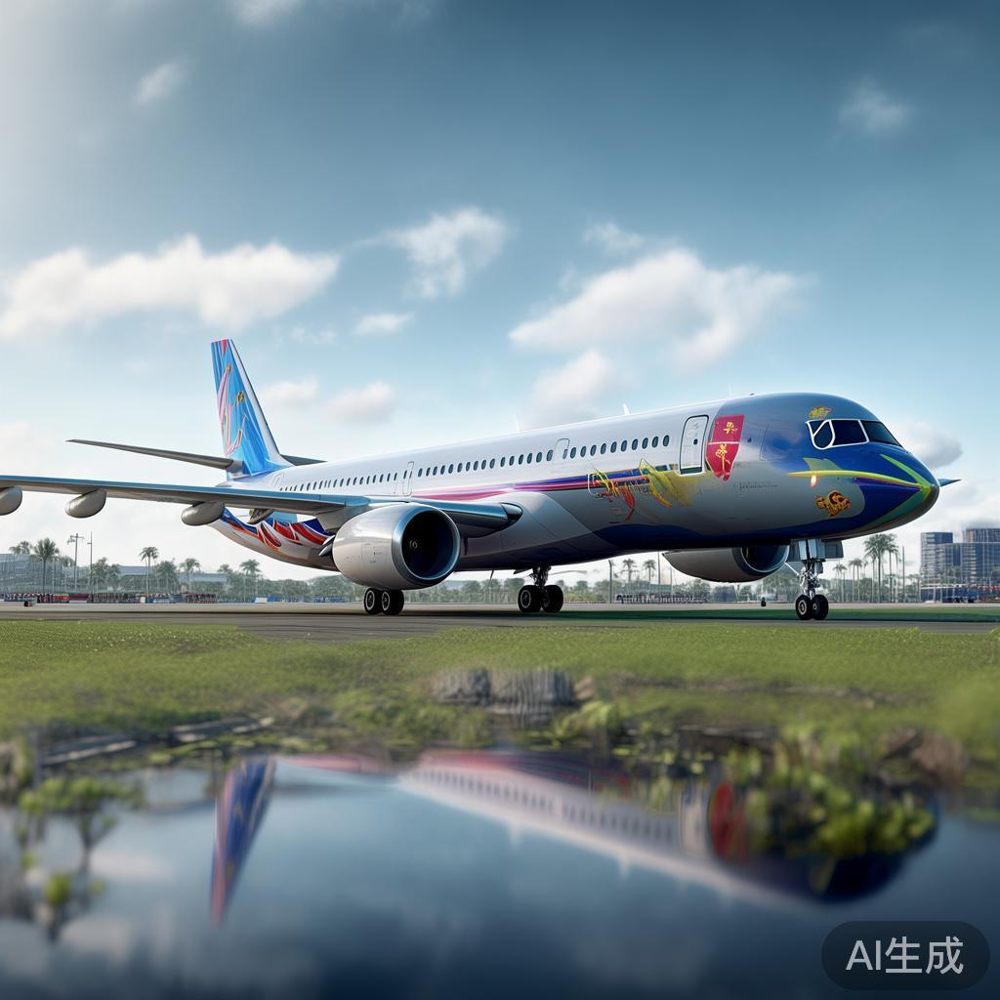
中国东方航空一架国产C919客机8月12日从上海浦东机场起飞，开启上海至新加坡的首航任务，标志着国产大飞机正式进入东南亚商业运营阶段。首航航班客座率超过95%，乘客对国产大飞机的舒适性给予高度评价。截至目前，C919累计交付运营数量已达36架，累计安全飞行超过15万小时。下一步，东航、国航、南航等航司将陆续开通C919执飞香港、曼谷、吉隆坡等航线，国产大飞机国际化进程持续加速。
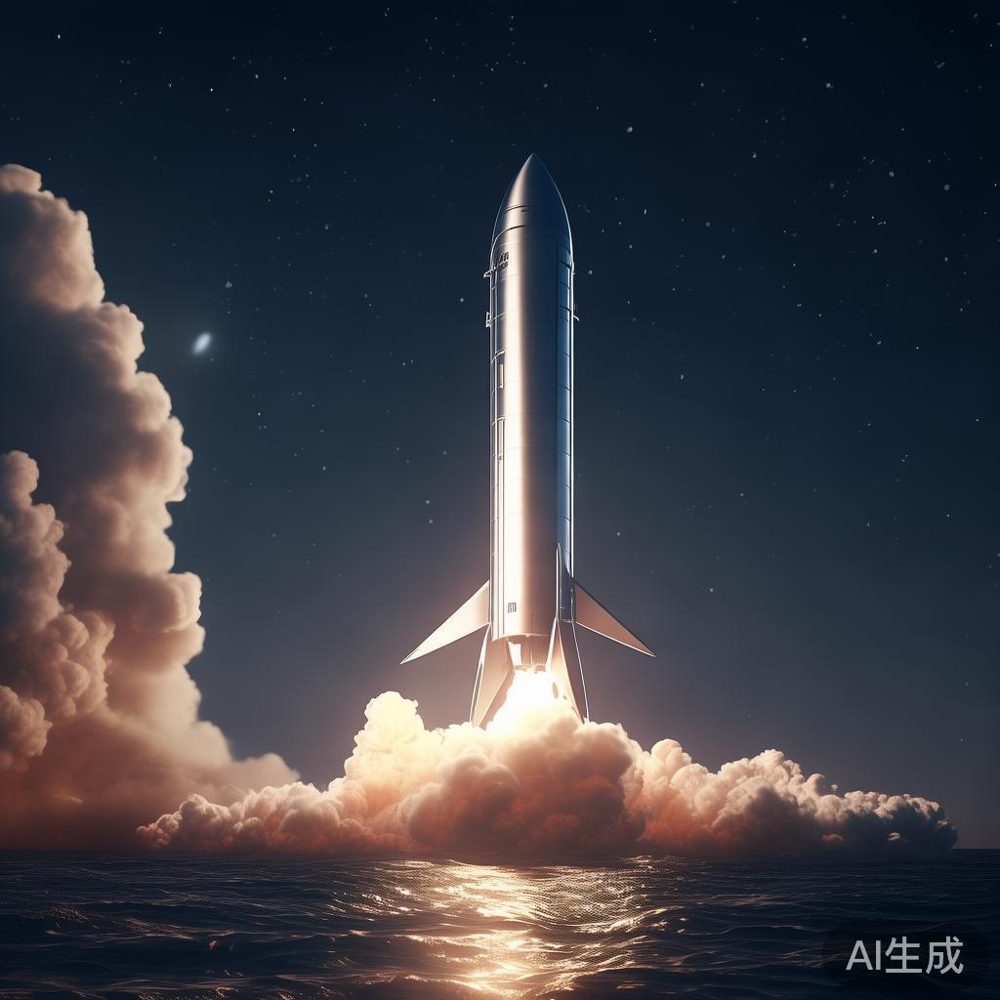
SpaceX公司8月12日成功完成星舰第12次试飞任务，火箭从得克萨斯州博卡奇卡发射升空，在完成一系列亚轨道测试后精准降落在印度洋回收平台。这是星舰首次实现轨道级完整回收，标志着人类有史以来最强大火箭的可重复使用技术迈入新阶段。本次试飞验证了新一代耐热瓦、改进型猛禽发动机以及精准着陆算法。SpaceX表示，明年将开启星舰商业载人和环月任务测试，业界普遍预期这将彻底重塑全球航天产业格局。
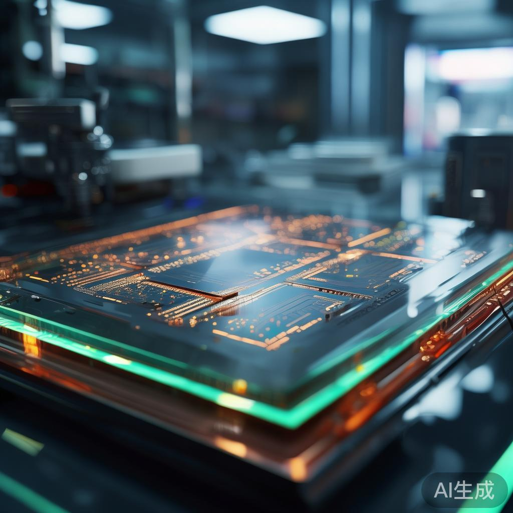
韩国三星电子和SK海力士8月12日宣布成立半导体战略联盟，将共同投资120亿美元开发2nm及以下先进制程技术，试图缩小与台积电在代工领域的差距。联盟同时涵盖HBM高带宽内存、AI加速芯片等下一代产品研发。日本方面，佳能、东京电子等设备厂商也将参与联盟。三星电子副会长表示，亚洲半导体产业需要通过深度协同应对全球供应链变化，预计2027年下半年首批联合研发产品将进入量产阶段。
上海市政府8月12日正式发布《数字游民签证实施细则》，明确允许持有该签证的全球远程工作者在中国最长居留5年，并可享受多项便利化政策。申请人需证明月收入不低于3万元人民币，主要面向程序员、独立设计师、自媒体创作者、自由咨询师等群体。这是继北京、深圳之后又一中国一线城市推出数字游民签证，预计将吸引超过50万国际远程工作者来华。配套的税收优惠、子女入学、医疗保险等政策也将陆续出台。
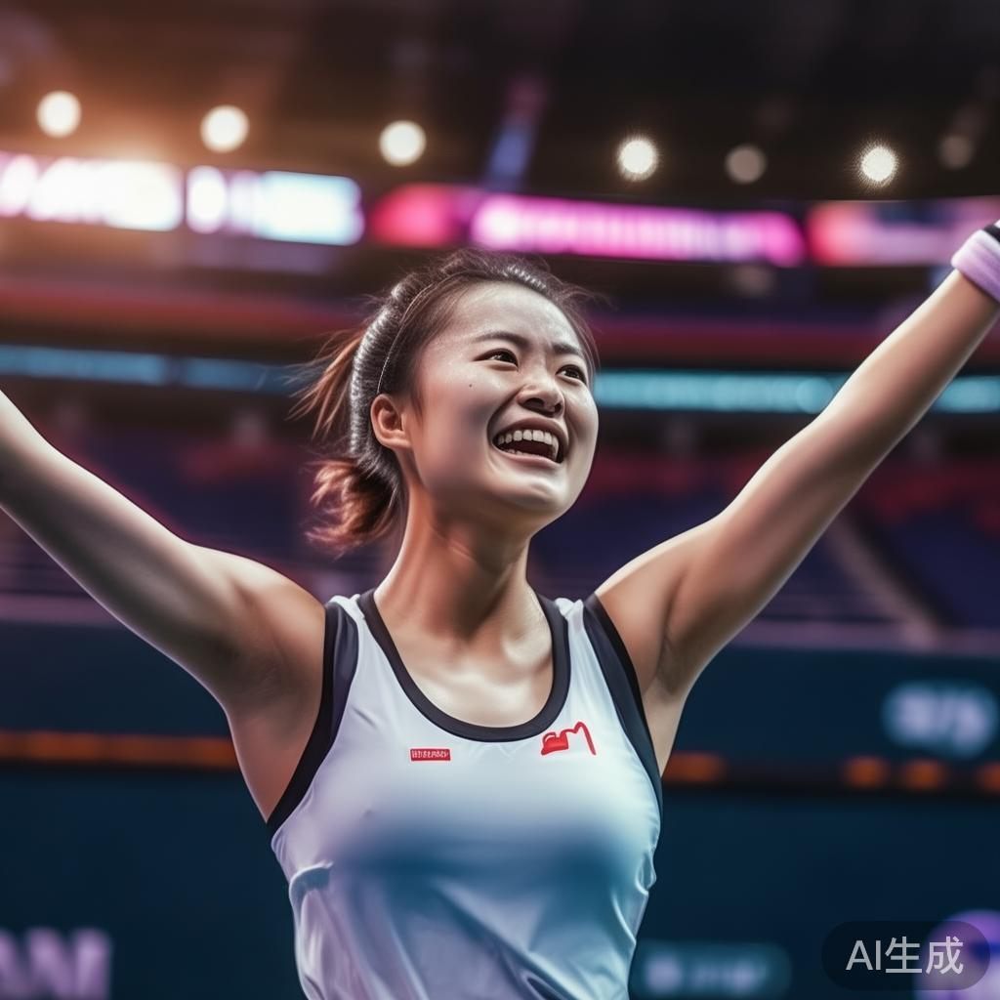
中国网球名将郑钦文在WTA1000罗杰斯杯半决赛中直落两盘击败前世界第一斯瓦泰克，职业生涯首次闯入该赛事决赛。郑钦文全场表现强势，发球得分率和底线相持均明显占优。决赛中她将面对白俄罗斯名将萨巴伦卡，双方过往交手互有胜负。郑钦文赛后表示，目前状态正处巅峰，期待在决赛中发挥全部水平。如能夺冠，她的WTA世界排名将首次跻身前三位，创造中国网球新历史。
国际反兴奋剂机构WADA独立调查委员会8月12日正式发布巴黎奥运会兴奋剂事件调查报告，认定至少5个国家在系统层面存在兴奋剂管理漏洞，部分运动员使用了新型基因兴奋剂技术。报告建议对相关国家实施为期两年的特殊监控，并建立全球统一的运动员生物护照系统。多国体育部长发表联合声明，表示将全面配合后续调查。国际奥委会表态将根据报告建议启动纪律审查程序，体育诚信议题再度成为全球焦点。
中国人民银行8月12日宣布，人民币跨境支付系统CIPS业务已覆盖全球185个国家和地区，参与机构数量突破1800家，业务规模较去年同期增长47%。CIPS已成为继SWIFT之后全球第二大跨境支付网络，在东盟、中东、独联体地区使用率显著提升。多国央行与中国签署双边本币互换协议，人民币国际化进程持续加速。分析认为，人民币国际地位的提升有助于降低各国对单一货币体系的过度依赖，推动国际货币体系多元化发展。
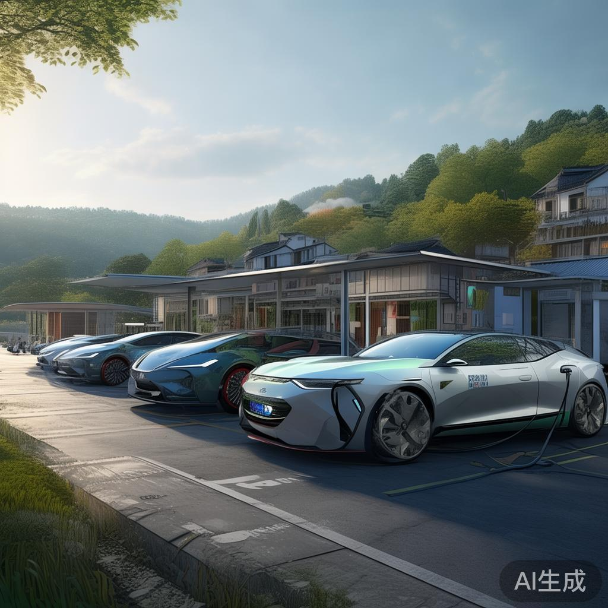
中国新能源汽车下乡行动计划8月12日发布最新数据，截至7月底全国县级行政区新能源车渗透率达到41.3%，较去年同期提升12.5个百分点。比亚迪、吉利、奇瑞等自主品牌在县级市场份额合计超过70%。政策方面，新一轮汽车以旧换新补贴最高提升至2万元，多地推出充电桩进村专项行动。行业研究机构预测，2026年全年中国新能源车销量将突破1500万辆，其中县级及农村市场贡献率有望首次突破50%。
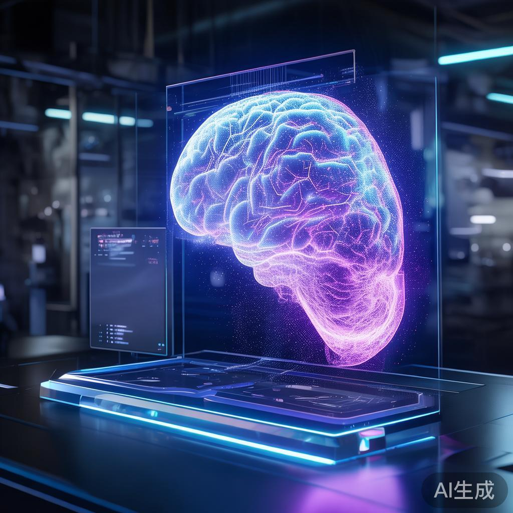
OpenAI于8月12日正式发布新一代旗舰大模型GPT-6，在数学推理、代码生成、长文档理解等核心能力上实现量级突破。在多项国际权威基准测试中，GPT-6准确率较GPT-5提升超过30%。OpenAI同步推出GPT-6 Pro和GPT-6 Mini版本，前者面向企业级复杂任务，后者面向消费级轻量化场景。多家头部云厂商已宣布与OpenAI达成深度合作，GPT-6将通过Azure、AWS、Google Cloud等多平台向全球用户开放，AI竞赛进入新一轮高潮。
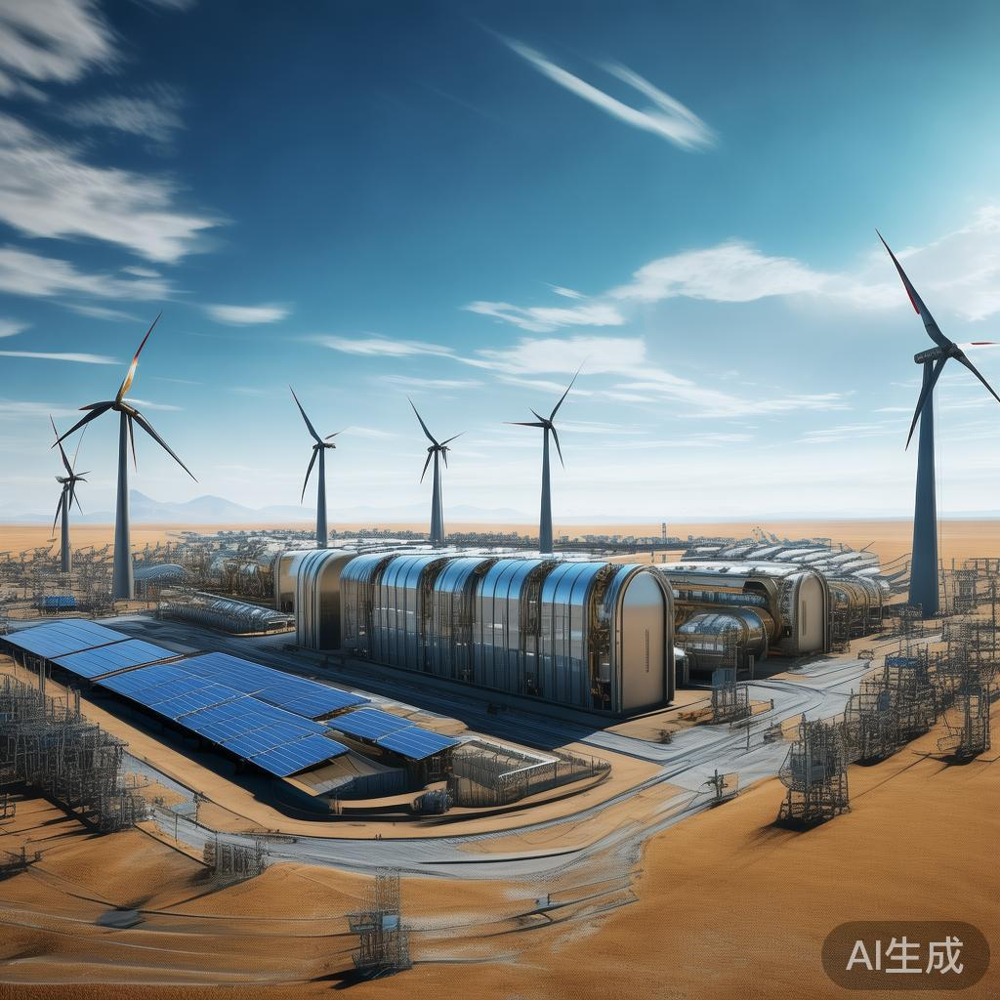
位于新疆库车的全球最大规模绿氢项目8月12日正式建成投产，年产能达20万吨绿氢，可替代约80万吨标煤，减少二氧化碳排放超过200万吨。项目配套建设2吉瓦光伏电站和1吉瓦风电场，采用电解水制氢工艺，制氢成本较初期下降60%。项目业主为中石化新星公司，主要客户包括周边煤化工炼油企业、加氢站运营商以及氢能源汽车制造商。该项目的投产标志着中国绿氢产业进入规模化发展阶段，对全球能源转型具有重要示范意义。
故宫博物院8月12日正式发布数字孪生平台，运用毫米级三维扫描、高精度纹理映射和实时渲染技术，将1862690件馆藏文物及所有古建筑完整数字化。全球观众可通过PC端和移动端云游故宫全馆，享受沉浸式参观体验。平台还集成AI讲解、虚拟复原、互动探索等功能，使文物背后的历史故事更加生动鲜活。这是故宫继故宫APP、数字故宫小程序之后的又一重大数字化升级，预计年访问量将突破2亿人次。
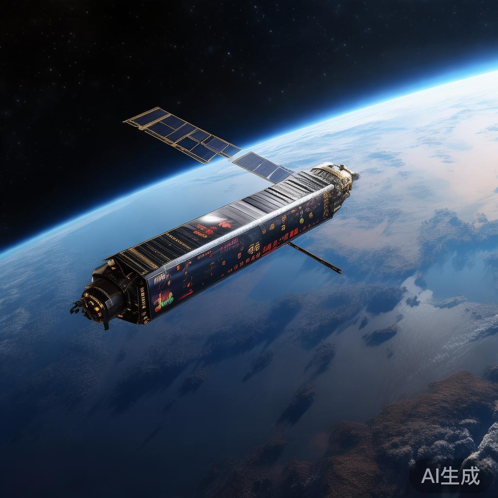
由中国商业航天公司之江实验室主导研制的全球首颗AI卫星8月12日搭乘长征八号遥十二运载火箭成功发射，进入预定低轨道。卫星搭载自主研发的天枢AI芯片，可在轨对遥感数据进行实时分析处理，30天内完成了对120TB遥感影像的训练任务。该技术大幅降低了数据下传带宽需求，使卫星应用效率提升10倍以上。任务负责人表示，下一步计划发射6颗同型号卫星组网运行，构建天地一体化的智能遥感观测系统。